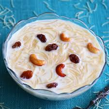

medhuvadai

Description
Payasam is a traditional South Indian dessert made with milk, jaggery or sugar, and rice or lentils. This creamy and sweet dish is a staple at festivals and celebrations, often garnished with cashews and raisins fried in ghee.
Ingredients
- 1/2 cup of rice or vermicelli
- 4 cups of milk
- 1/2 cup of sugar or jaggery (adjust to taste)
- 2 tablespoons of ghee
- A handful of cashews and raisins
- 1/4 teaspoon of cardamom powder
Steps
- Heat ghee in a pan and roast the rice or vermicelli until golden brown.
- Boil the milk and add the roasted rice/vermicelli. Cook until soft.
- Stir in sugar or jaggery and mix well. Simmer for 5-10 minutes.
- In a separate pan, fry cashews and raisins in ghee. Add them to the payasam
- Sprinkle cardamom powder for flavor and serve warm or chilled.